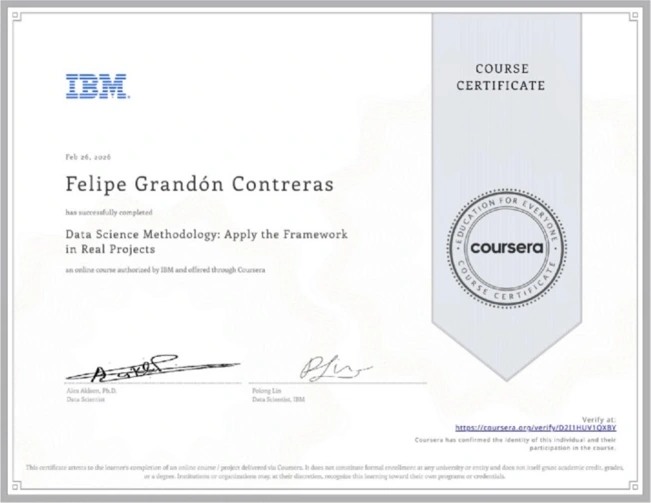
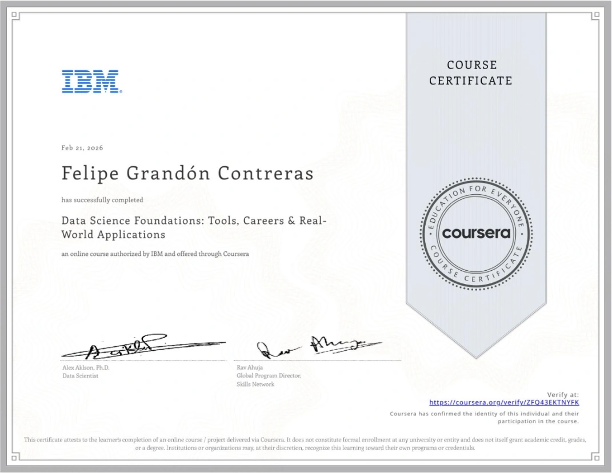

02 / PROFILE
Perfil profesional
Formación, competencias e intereses.
Sobre mí
Informática aplicada
Me interesa conectar el desarrollo de software con el razonamiento matemático y la investigación aplicada. Mi formación combina programación, algoritmos y fundamentos de ciencia de datos.
Intereses
Formación
2024 — Actualidad
Universidad de Concepción
Ingeniería Civil Informática
Marzo 2027 / Ingreso previsto
Universidad Autónoma de Chile
Ingeniería en Informática · modalidad online
Certificaciones
Cuatro cursos IBM completados. Explora las capturas de los diplomas y sus enlaces oficiales de autenticidad.


Data Science Methodology: Apply the Framework in Real Projects
Data Science · Methodology
Verificar credencial ↗


Data Science Foundations: Tools, Careers & Real-World Applications
Data Science · Foundations
Verificar credencial ↗Imágenes recortadas de las capturas de Coursera proporcionadas; los enlaces oficiales permiten verificar cada credencial.